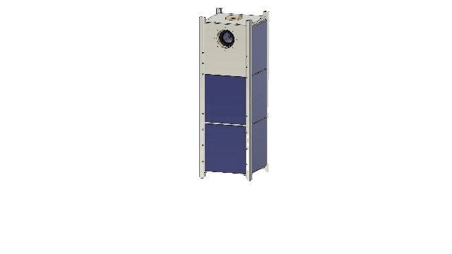
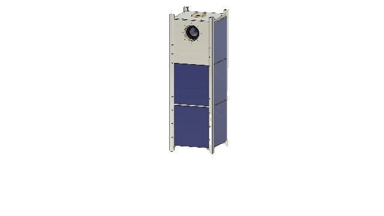

SS AMU SAT project shall be the first satellite of the Aligarh Muslim University to be stationed in the Lower Earth Orbit (LEO).In rememberance of Sir Syed Ahmad Khan the project is named as SS AMU SAT.
 

The SS AMU SAT project is an
initiative by the Students and
Alumni of
Zakir Husain College of Engineering and Technology. The project was concieved during a discussion
among a
small group of students and alumni during the Winters of 2021, at the AMU
RoboClub.
Finally, in the early week of December, 2021, this project kick-started after everal rounds of
discussions.
It is pertinent to mention that there has also been an observation of the NAAC committee, that
visited in
December 2021, to innovate in the area of Aerial Technology; and thus, the timing of this project
could
never have been more suited.
In the weeks to come, the team grew from a handful to a dozen, to design the following subsystems:
Small | Light | Beautiful